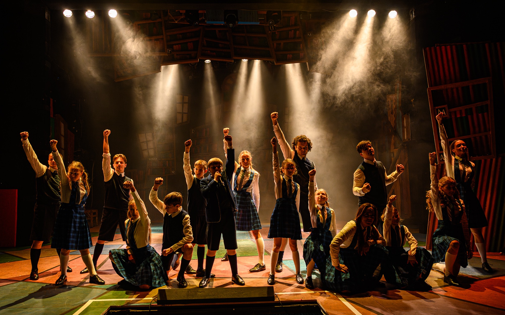
Presnosť v každom
obraze.
Na inscenácii Matilda v Divadle Nová scéna som ako asistent svetelnej réžie spolupracoval s light dizajnérom Davidom Kachlířom a kompletne naprogramoval svetelnú show. Programovanie muselo presne reagovať na hudbu, choreografiu a rýchle scénické zmeny, aby svetlo prirodzene podporovalo tempo a emóciu inscenácie. Počas hodín strávených za pultom som pomocou presne načasovaných cues a množstva operatívnych zmien pretavil jeho dizajnérsku víziu do fungujúceho svetelného celku, ktorého výsledok vidíte na záberoch z predstavenia.
ROLAAsistent svetelnej réžie · Programming
LIGHT DESIGNDavid Kachlíř
CONSOLEChamSys MQ500M
PREMIÉRA19. 9. 2026
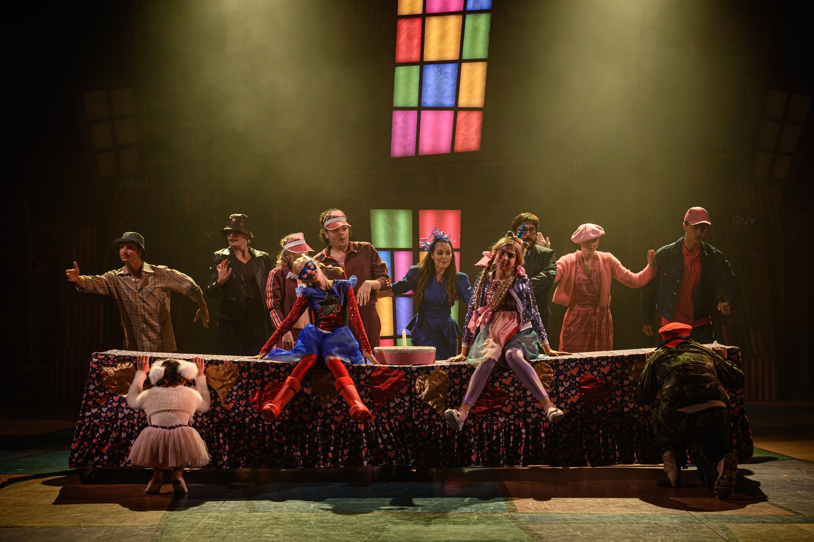
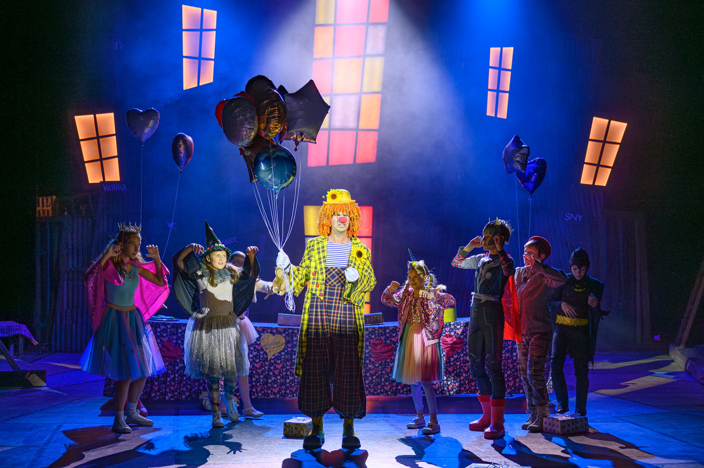
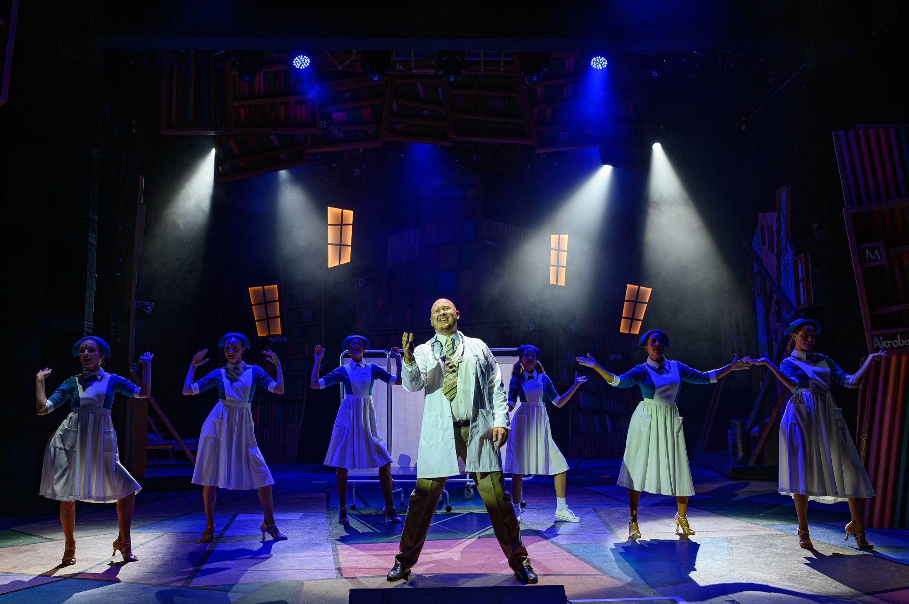
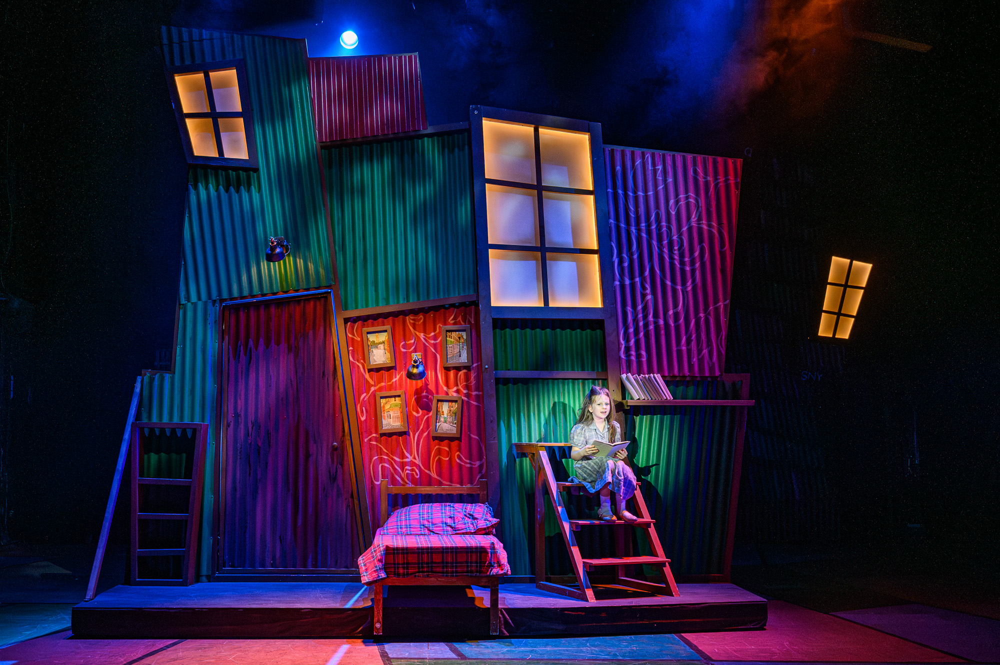
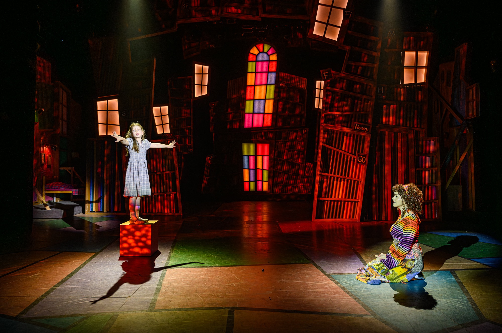
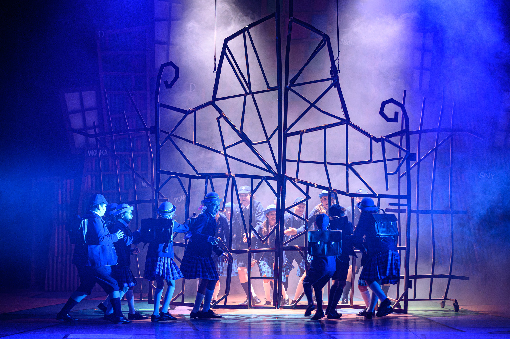
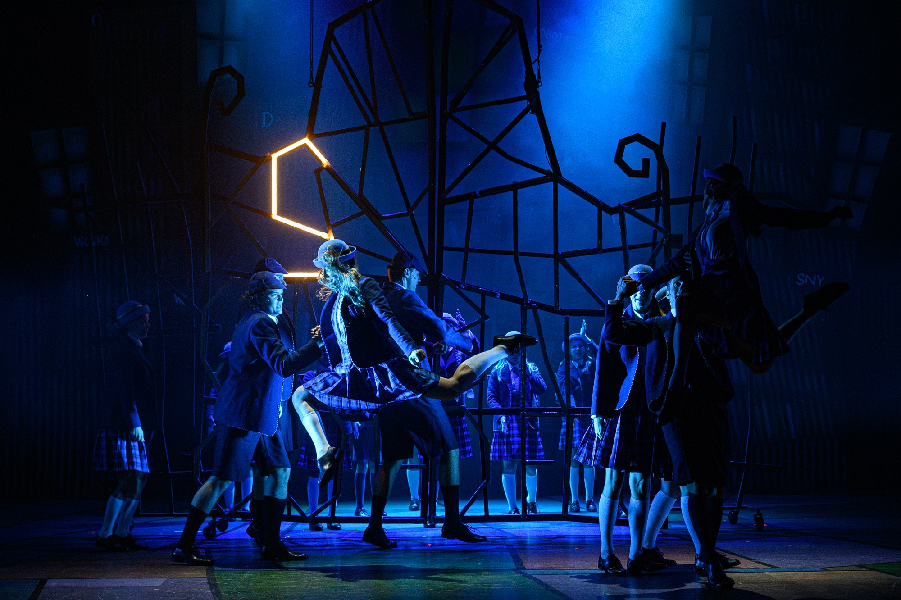
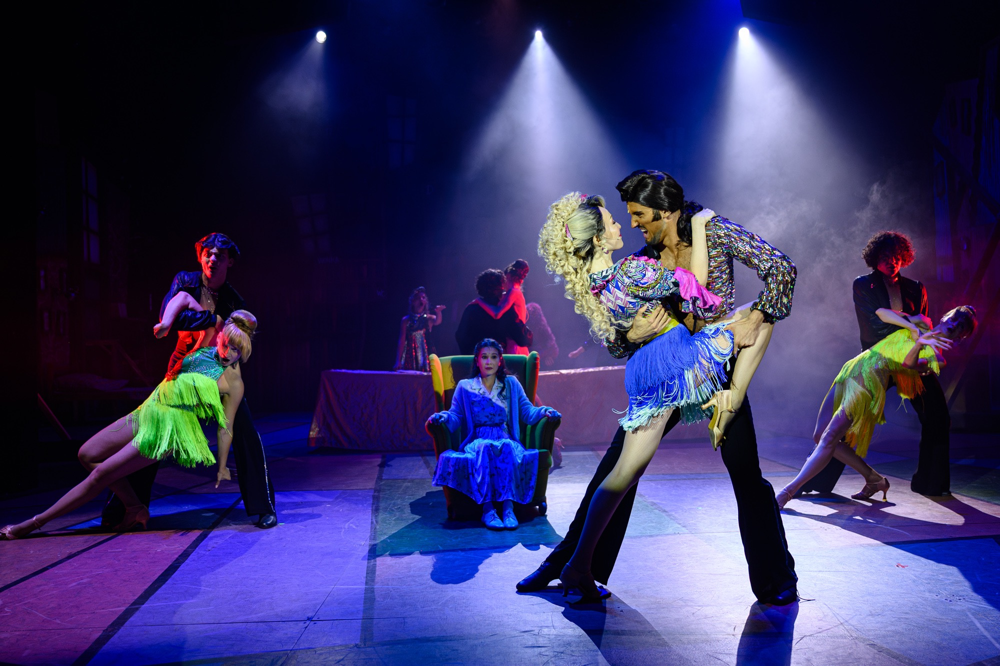
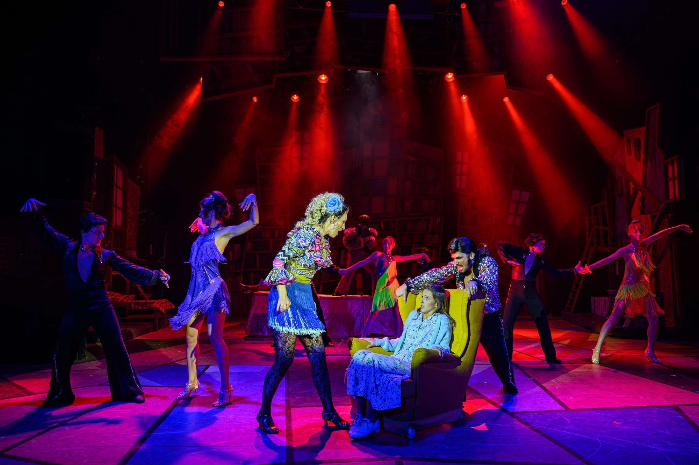
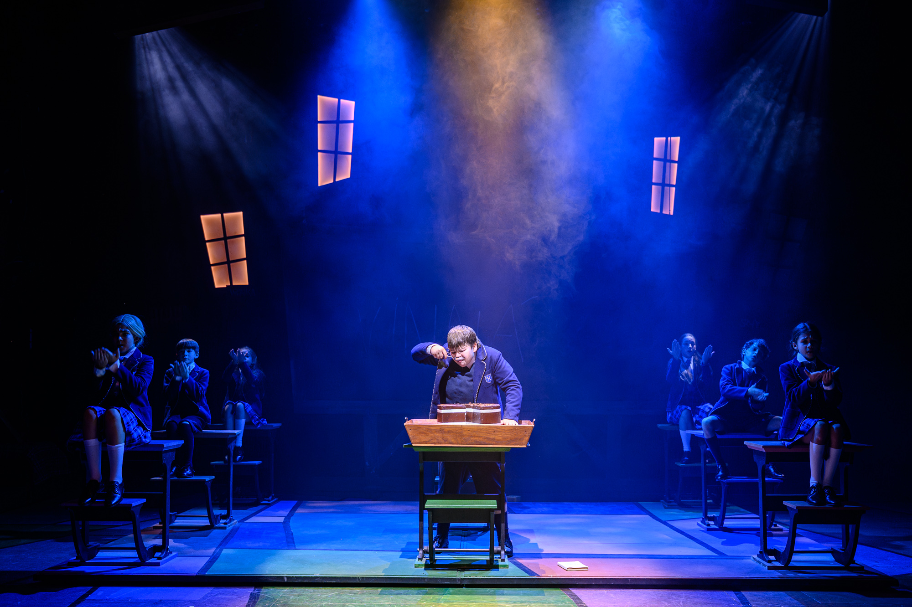
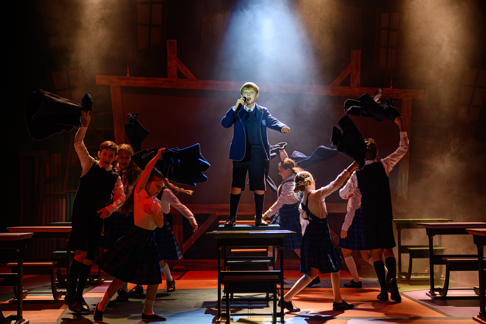
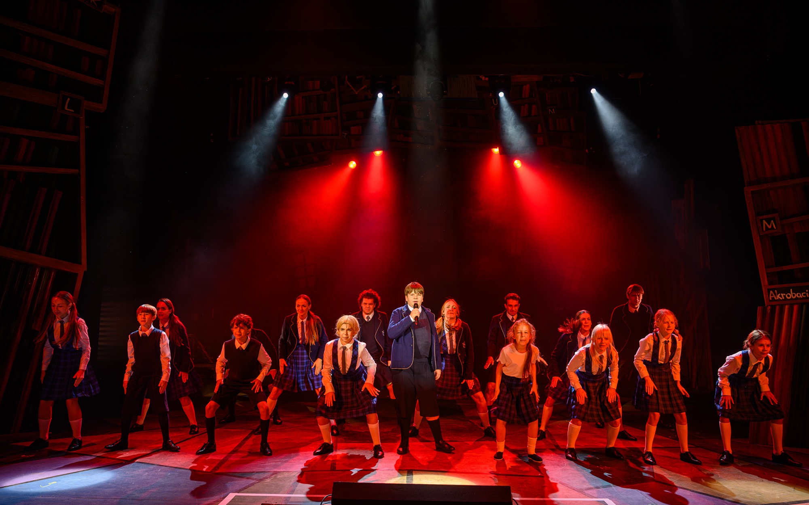
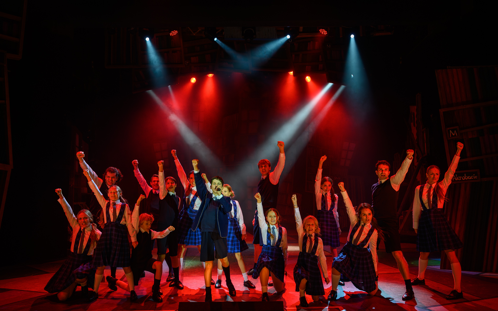
Fotografie © Robert Tappert